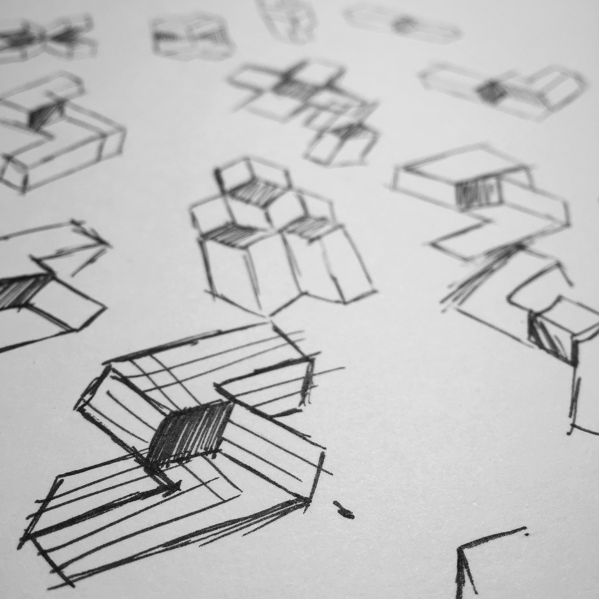

In April of 2015, we held a small employee art show at Sidecar. Individuals from across the organization showed off what they make when they're not at the office. From comical charicatures to magnums of great Syrah, it was awesome seeing how truly creative and talented the individuals I work with are.
After just re-playing Monument Valley, I really wanted to try to make a piece that had an Escher-esque effect. Out of complete luck, a few months earlier I was working on an isometric piece and after incorrectly rotating a car, created a weird visual effect seen below:

For a look at this project, go here.
After taking a look at my other Rubik's cube inspired piece I started to sketch out ways that I could combine Escher's mind-bending effect with my love for the Rubik's Cube.
The shape that you see in the bottom left ended up being the basis for my piece titled "Escher's Rubik's Cube".